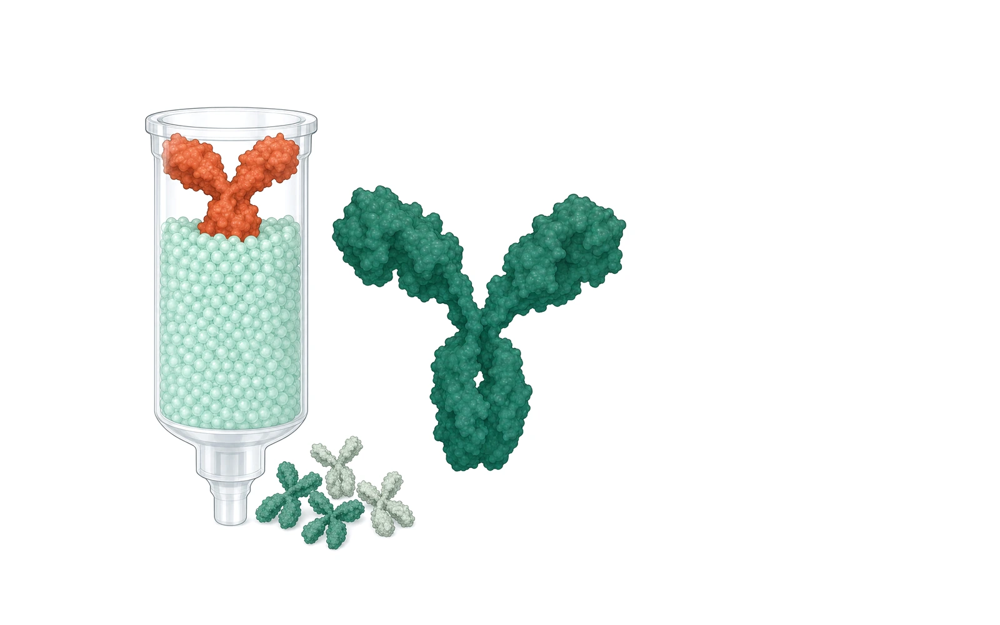
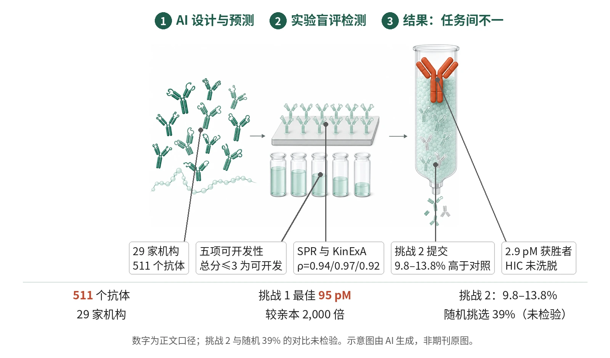

封面示意：层析柱顶有赤陶红抗体，右侧是巨大绿色抗体。图片由 AI 生成，非原文图片。
29 家机构的 511 个 AI 设计或预测抗体经盲评实验验证：挑战 1 最佳 95 pM（较亲本提高 2,000 倍），挑战 2 中仅 9.8–13.8% 的提交亲和力高于簇对照。
主领域：AI 药物设计 相关：抗体工程 / 抗体亲和力成熟 / 盲评基准 / 蛋白语言模型 / 可开发性评估 / KinExA
关键数据卡
- 研究类型：前瞻性、盲评的计算抗体设计基准挑战赛（实验验证，靶点 SARS-CoV-2 RBD）
- 样本量 n：511 个 AI 设计或预测抗体，29 家机构；挑战 1：25 家机构 165 个提交；挑战 2：27F、28F、47F 分别 58、58、61 个提交；挑战 3：23 家机构 168 个提交
- 对照：亲本抗体、实验衍生抗体、各簇对照（最丰富克隆）、随机挑选克隆
- 干预/剂量：各机构提交的 AI 设计序列，合成为全长 IgG；挑战 1 改 LCDR1–3、HCDR1–2，挑战 3 改 CDR 不改框架
- 主要终点：无预设主要终点；核心读出为挑战 2 中亲和力高于簇对照（最丰富克隆）的提交比例，并与随机挑选克隆比较
- 主要终点结果：27F、28F、47F 分别为 10.3%、13.8%、9.8%（全部 AI 提交 9.8–13.8%，获胜者 11–50%），随机挑选克隆为 39%；仅 WashU 为 50%；该对比未做统计检验
- 统计量：检测平台间双侧 Spearman 秩相关，未做多重比较校正；KinExA 以 95% 置信区间重叠判断无差异
- 证据等级：全文
- 核对记录：读了 Nature Biotechnology 开放获取 HTML 的 Abstract、Main、Results、Discussion、图注（Fig. 1–5、Extended Data Fig. 1–4）与 Methods

- 29 家机构提交 511 个 AI 抗体序列
- 序列表达为 IgG，测 SPR、KinExA
- 五项检测计分，总分≤3 视为可开发
- 挑战 2 仅 9.8–13.8% 高于簇对照
- 挑战 3 获胜者 2.9 pM 但 HIC 未洗脱
示意图展示 AIntibody 流程：各机构提交的 AI 抗体序列表达为 IgG，经 SPR、KinExA 与五项可开发性检测，再比较各任务结果；挑战 3 获胜抗体在 HIC 柱上未洗脱。示意图由 AI 生成，依据原文结果绘制，非期刊原图，不代表分子比例
研究背景与待解问题
计算抗体设计的多数性能评估依赖回顾性分析、缺少新增实验，外部验证有限，也使真实水平难以分辨；在预印本和技术报告中方法不断增多时，这一问题更突出。结构预测领域借 CASP 的前瞻性盲评确立了共同标准，抗体领域缺少对应的基准。
抗体工程需要多参数优化：除亲和力外还有表达、Tm、多反应性和聚集等可开发性，改善一项而不损伤其他很难。氨基酸序列不能被人直接读出功能，亲和力预测所需的多样实验数据又少而分散。本研究以实验测得的亲和力与可开发性为锚点，做前瞻性盲评。
研究设计
AIntibody 为前瞻性盲评挑战赛，靶点 SARS-CoV-2 RBD，共测试 29 家机构的 511 个 AI 设计或预测抗体，分三项任务：基于一期测序的亲和力成熟、三个 HCDR3 簇内亲和力排序、完整选择输出之外的 CDR 设计。序列表达为全长 IgG，由独立实验室检测；未做组间比较效能设计。
亲和力用 HT-SPR 与 KinExA 测定。可开发性按 AC-SINS、BVP、HIC、Tm、Tagg 五项各记 0（通过）、1（可疑）、2（失败），阈值依 Jain 等临床阶段抗体校准，总分≤3 视为可开发。秩相关：SPR 对单点 KinExA ρ=0.94，单点对标准 KinExA ρ=0.97，标准 KinExA 对 SPR ρ=0.92；绝对亲和力相关较弱，KinExA 通常更高。
核心结果
挑战 1：亲和力成熟
挑战 1 要求在不改 HCDR3 与框架的前提下成熟亲本抗体。25 家机构共 165 个提交中，71.5% 结合 RBD，3.0% 达亚纳摩尔，仅 1 个（0.6%）达亚 100 pM；86.1% 通过可开发性，63.0% 为可开发的结合物。Aureka 的获胜序列为 95 pM，较亲本提高 2,000 倍。
与实验抗体及共有序列对照
AI 最佳 SPR 亲和力为 340 pM，实验最佳为 517 pM；KinExA 下实验前五为 113–1,230 pM，AI 前五为 95–984 pM，置信区间重叠，原文判为统计上无法区分。ProBioGen 不用机器学习的共有序列与文库共有序列在六个 CDR 上完全一致，KinExA 540 pM 列第三、无可开发性问题，排在多数 AI 设计之前。
挑战 2：簇内排序
三簇分别有 10.3%、13.8%、9.8% 的提交亲和力高于簇对照（最丰富克隆），即全部 AI 提交中仅 9.8–13.8%；获胜者中该比例为 11–50%，随机挑选克隆为 39%。除 WashU（50% 对 39%）外，其余 AI 预测策略均差于随机挑选。该对比原文未报告统计检验。
各簇最佳预测
27F 为 9.2 pM，较簇对照（36.6 pM）提高 4.0 倍；47F 为 50 pM，对照 378 pM，提高 7.6 倍；28F 仅提高 1.8 倍（101 对 177 pM）。28F 有 41.4% 的提交因可开发性不佳被取消资格，47F 为 100% 通过，可开发性与 HCDR3 簇强相关。
挑战 3：库外设计
挑战 3 提供了 142 个抗体的亲和力。最佳实验抗体 KinExA 为 9.2 pM；2.9、3.1 pM 的两个提交更强，另四个相当（8.7–9.6 pM），仅一个（占总数 1.2%）满足可开发性（评分≤3）。获胜的 2.9 pM 抗体在 HIC 柱未洗脱，按常规治疗标准多半被淘汰，却因综合评分可抵消单项失败而夺冠。
机制解读
原文实验证明：高亲和力抗体呈特异基序（LCDR1 第 6 位酪氨酸、LCDR3 第 8 位色氨酸），部分 AI 算法在给定数据下纳入了这些替换。Aureka 获胜序列与亲本相距 19 个替换、与实验数据集至少 12 个；挑战 3 的前列提交均沿用实验数据中已有的 HCDR3。
获胜方法类别随任务而变：Aureka（PLM 加结构）胜挑战 1，Xencor（PLM）胜挑战 3，28F 由 WashU 与 Xencor 并列；原文称类别内差异大，仅反映总体趋势，非受控比较。
作者推测：作者推测，簇内排序的优劣可能取决于局部表位或簇的特异性而非方法类别；PLM 类方法可能在库外新序列生成中更有用。作者还认为，获胜者对已有 HCDR3 基序的依赖，使其能否迁移到数据稀少场景存疑，并据此主张按任务匹配方法。
局限与不确定
- 外推性：仅一个抗原（SARS-CoV-2 RBD），数据刻意丰富，作者称结果是该靶点类别当前计算能力的上界，不代表其他抗原；挑战 2、3 还给了亲和力数据，早期发现通常没有。
- 盲评与参与：首轮由报告结果的同一联盟组织，依赖组织者诚信而非信息学手段保证盲评，多家知名团队未参与。
- 终点与统计：挑战 2 与随机 39% 的比较未检验；KinExA 只测最强子集（挑战 1 仅 8 个 AI 提交）；综合评分允许单项失败被抵消。
- 数字口径：Fig. 3d 图注称 28F 为 5.2%，正文为 13.8%，本文按正文。
临床/产业意义
若目标抗原已有深度测序数据，亲和力成熟这类任务可借助表现最好的 AI 方法缩短实验周期；原文估计，若 Aureka 的模型广泛适用，可节省 2–3 周，并认为合成测试 10–20 个设计即可找到有用的高亲和力变体。无机器学习的共有序列基线，则可作为后续方法至少需要超越的参照。
若未来基准采用硬性否决（go/no-go）条件，评分将更接近治疗开发的实际要求；作者计划在 2026 年的下一轮中，用未知靶点和无亲和力数据的条件重新评估。
作者、出处与核对
Erasmus MF, Bedinger D, Hopkins E, Ferguson G, Strickler J, Graff CP, et al. A blinded, prospective benchmark of in silico antibody discovery anchored to experimental affinity and developability. Nat Biotechnol. 2026. https://doi.org/10.1038/s41587-026-03238-6
证据等级：全文；核对记录：读了 Nature Biotechnology 开放获取 HTML 的 Abstract、Main、Results、Discussion、图注（Fig. 1–5、Extended Data Fig. 1–4）与 Methods